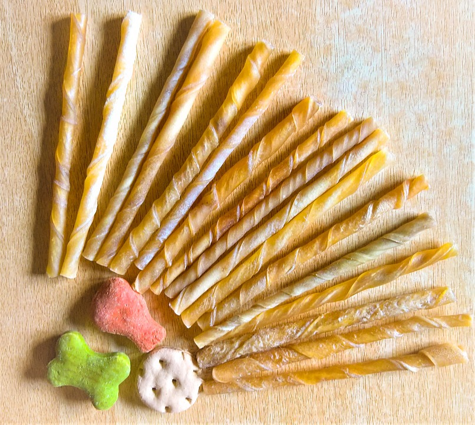
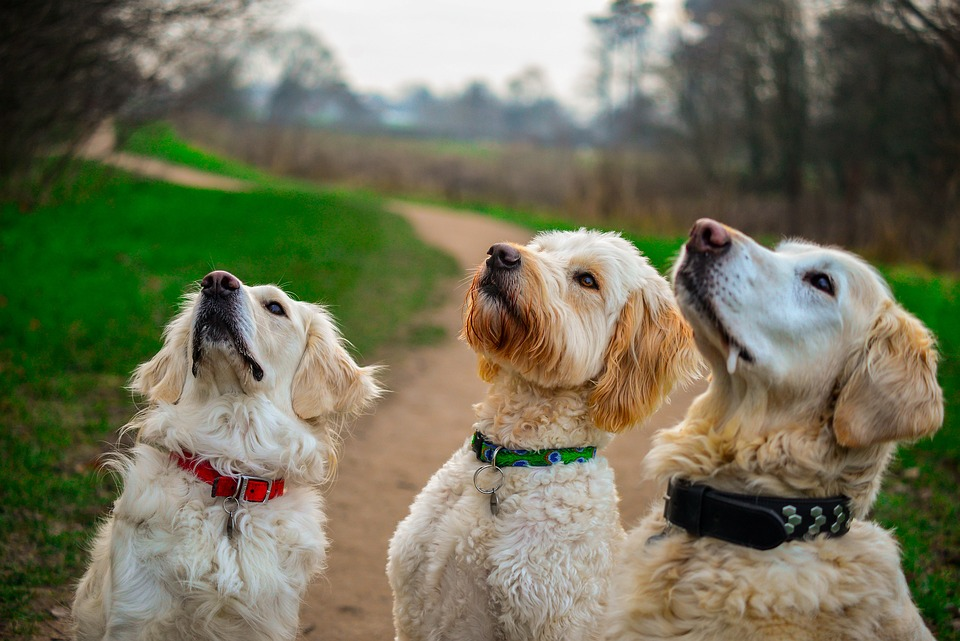
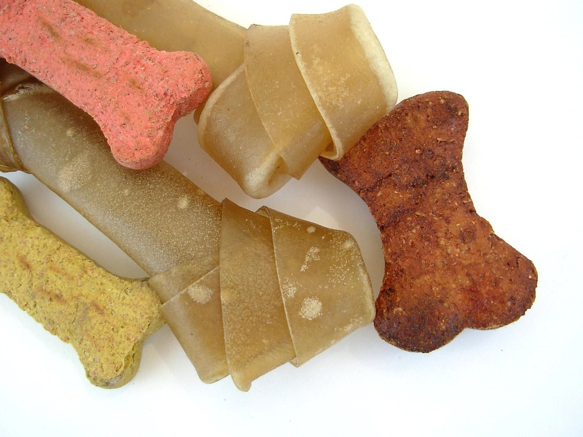

Furry Friends Products began in 2017 and ever since have been creating 100% Natural Dog Treats and Chews. Being based in Ireland at the heart of the Curragh of Kildare, Kevin and Mary saw an opportunity to produce high quality, natural dog treats using ethically sourced raw materials from sustainable fisheries. Fish co-products from the human chain like Fish Skin would be used to ensure less of the Fish goes to waste, and recycled energy would be used to dry them at a low temperature making sure none of the intrinsic values are damaged, producing a more nutritionally dense treat. You can order these treats with us by contacting us or why not pop in to see what's available on our shelves.
  